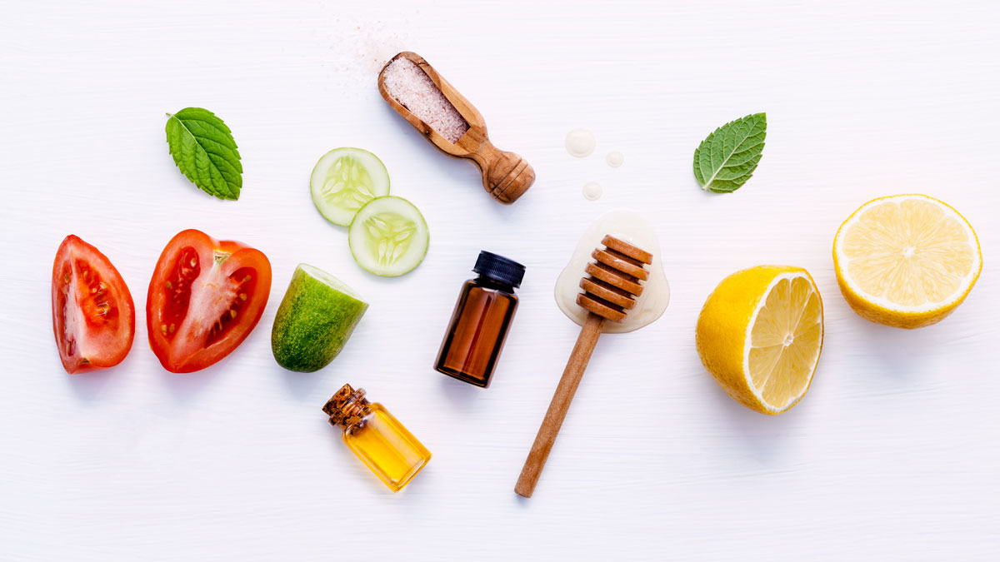

skin. from the inside out. from the outside in.
Olga Casabona, Health Coach, Dec 9th, 2017
Skin is your body’s largest organ, your best detox friend, and the mirror of your health and lifestyle. As such, you want to take care of it, especially as we transition into winter.
Heaters at home will cause dryness and dehydration. Wind, ice and extreme temperature will damage your face, whether you are skiing down a slope in Vermont or simply avoiding the black ice on your way to work.
One way of showing the love to your skin is by nourishing it with the best foods and quality care, from the inside out and from the outside in. What does this mean exactly?
From the inside out Hydrate and lubricate your body by adding to your diet foods like cucumbers, celery and tomatoes.
Experiment with hearty veggies such as carrots and a wide variety of winter squashes.
To support healthy levels of collagen and elastin, stock up on vitamin C from citrus fruits, dark leafy greens, red peppers, strawberries and sweet potatoes, as well as zinc found in pumpkin seeds, almonds and more.
Last, but not least, ramp up your omega-3 intake. Flaxseeds, chia, walnuts and fatty fish are part of this great family of nutrients that keep not only your skin, but also your hair and nails, looking fabulous year-round.
From the outside inHere are my 3 essential steps to a radiant skin.
Know your skin type.If you are the lucky type, your skin doesn’t get oily, your pores are small, your skin tone looks even and you hardly experience breakouts. For the not so lucky majority, your skin can fall under one of these categories: sensitive, dry, oily or combination. Your tone (light, medium or dark) also dictates what conditions you are susceptible to, which will help you choose the best products for you as an individual.
Follow a good skin care routine.Your daily care is as important as your periodical professional facials and body treatments. Whether you DIY at home or visit your favorite beauty specialist, there are 5 steps you should follow as part of your ritual: cleanse, tone, moisturize, exfoliate and mask. Exfoliation in winter is vital and butters and oils, your best bet. Be creative and play with oat flour, salt and almond, avocado and olive oils. Serum is a great addition and an amazing problem solver if you experience pimples, wrinkles, dark spots or you want to simply prevent the signs of aging.
Use natural, non-toxic products.Here is a stat for you – women absorb nearly 5 pounds of chemicals per year from make-up alone. Imagine when you add moisturizers, shower gel, soap, shampoo and even household cleaning products to your range of environmental disruptors. Choose a beauty salon that cares about an eco-friendly, non-toxic environment for their clients, employees and the earth for that matter.
And because I know how daunting is to dissect labels despite your healthiest intentions, this is a list of common disruptors you want to avoid as much as possible: petrolatum, phthalates, SLS and SLES, parabens and chemicals from the anolamine family.
Are you ready for the winter? Do you feel you know a little more now to keep your skin shining? Try your best, have fun, and if you still need time to become your skin’s best care giver, here is another stat for you - the outer layer of the skin regenerates every month. Good to know you have a monthly chance to give your skin some love!